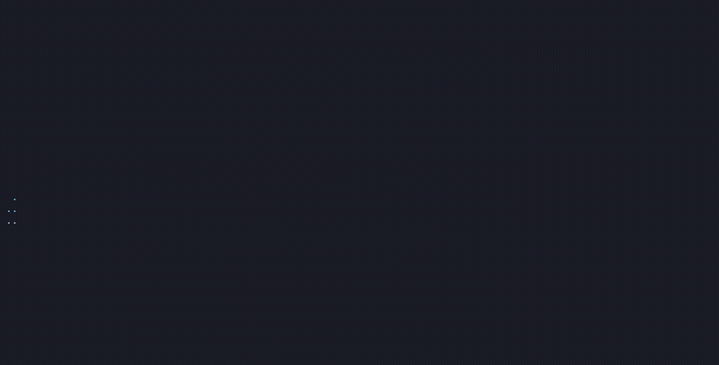

a Hyprland-native fetch utility
Live workspace, window and monitor state — plus the theme, wallpaper and daemons behind your rice. Nerd Font icons by default, a real PNG logo if you want one, rendered in ~50 ms.

what it shows
More than hardware.
Generic fetch tools list your CPU and kernel. hyprfetch also reads the compositor and the desktop you actually built.
Live Hyprland state
Workspace, clients, focused output, active window, monitors, keybinds and layer-shell surfaces — updated at the moment you run it.
Knows your setup
GTK theme, icons, cursor, font and wallpaper backend, plus twenty daemon categories from your bar and launcher to night light.
Made for screenshots
Distro logos in solid pixel blocks, Nerd Font glyphs in front of every label, and 18 palettes. Point --logo-image at a PNG and it is drawn beside the rows. Width-aware layout that degrades gracefully.
--list-themes
Eighteen palettes. One binary.
Every palette is verified against the theme's own source and colors the keys, title, logo, bars and values together. Pick one by name.


getting started
Install in one line.
Available on the AUR, or build from source with Cargo.
yay -S hyprfetch-gitcargo install --path . --lockedThen just run hyprfetch. Need it faster? hyprfetch --fast skips the expensive probes.
Posting the screenshot somewhere? hyprfetch --redact replaces your account name, hostname, private IP, Wi-Fi SSID and hardware serials before anything is printed — the rows and layout stay exactly as they are.
The default is a curated 21 modules (about 30 rows). --preset all brings back every diagnostic, --preset minimal trims it to seven.